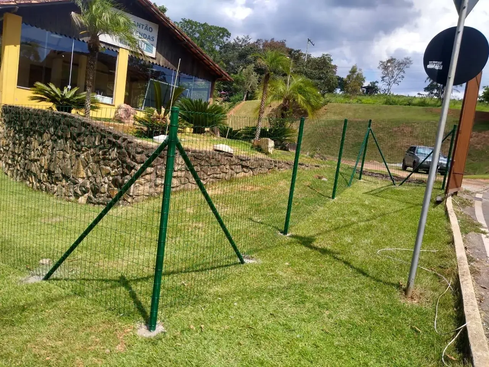
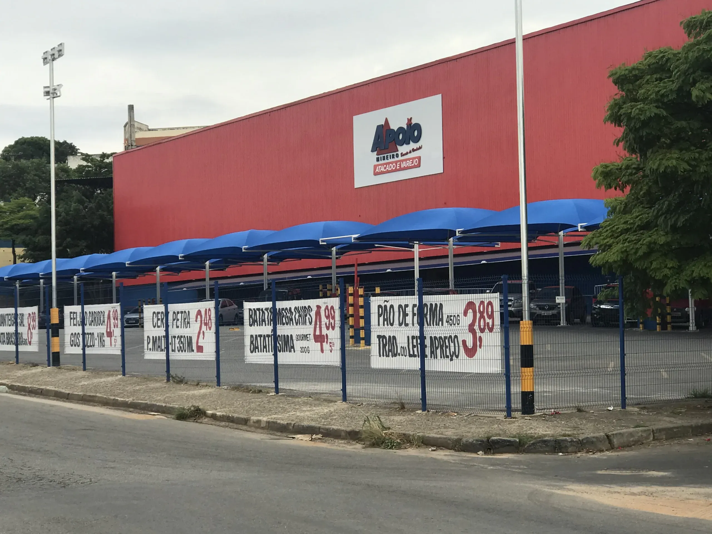
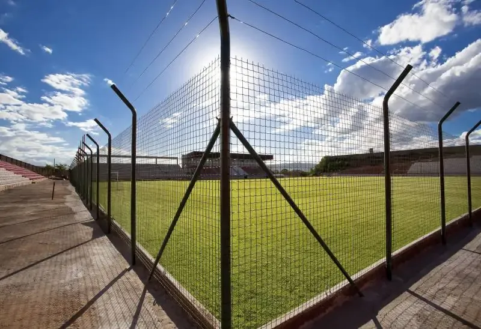

Cercamentos & Proteção Perimetral
Projetos para grandes obras, indústrias e condomínios de alto padrão.
Zero
manutenção, máxima segurança.
Engenharia de Perímetros
Não vendemos apenas cercas — blindamos patrimônios. A Estremoz ajuda empresas como Apoio Mineiro, Telhanorte e Burger King a protegerem suas operações com soluções de segurança perimetral de alto desempenho, eliminando dores de cabeça com manutenções constantes.
Gradil em PVC
Indicado para áreas residenciais, urbanas e industriais. Nossos painéis possuem galvanização tripla por imersão a quente e, no caso do PVC, uma blindagem absoluta contra intempéries. Isso zera o seu custo de manutenção a médio e longo prazo. Você instala e esquece.
Gradis de Proteção Industrial — NR12
Para indústrias que precisam adequar o isolamento de maquinários à norma NR12, oferecemos gradis de proteção industrial sob medida. Resistência máxima, conformidade total e eliminação de áreas de risco expostas no seu parque fabril.
Concertina e Segurança Perimetral
Proteção perimetral completa para o seu projeto. Nossas soluções em concertina e tela alambrado são projetadas para resistir à oxidação precoce e entregar alta performance mesmo em ambientes com maresia ou clima agressivo.
Fotomontagem Executiva
A Estremoz oferece um serviço exclusivo: nossa equipe fotografa sua planta atual e um designer projeta o gradil exato na imagem. Você e sua diretoria visualizam a obra 100% finalizada, com estética e segurança reais, antes de assinarmos qualquer contrato. Sem surpresas, sem desvios de projeto.
Projeto Turnkey — Chave na Mão
Assumimos a engenharia completa do seu projeto: da medição técnica do solo e topografia até a entrega final da obra. Elaboramos o projeto, especificamos o material mais adequado e executamos a instalação com mão de obra especializada. Tudo de ponta a ponta.
Segurança Residencial Elegante
O cercamento da sua casa não precisa parecer uma prisão. Nossos projetos unem design sofisticado e proteção implacável. Com o Gradil em PVC, você tem um acabamento impecável que valoriza a fachada do seu imóvel, sem abrir mão da segurança da sua família.
Tranquilidade para Crianças e Pets
Desenvolvemos soluções com malhas seguras e acabamento sem arestas cortantes. O espaço da sua casa se torna um verdadeiro refúgio, mantendo crianças e animais de estimação protegidos e limitando o acesso de intrusos de forma totalmente segura.
Integração com o Paisagismo
Ao contrário dos muros de concreto que bloqueiam a visão, os gradis e alambrados permitem a passagem de luz e ventilação, criando um cenário perfeito para trepadeiras e jardins verticais. Sua casa respira melhor e ganha um toque verde, mantendo a demarcação clara.
Instalação Rápida e Limpa
Esqueça a dor de cabeça de obras demoradas com cimento e entulho. Nossa equipe instala seu cercamento de forma rápida, organizada e silenciosa. Em pouco tempo, sua residência ganha uma nova cara e um perímetro totalmente protegido e valorizado.
Segurança de Alto Padrão para Arenas
A proteção do público e dos atletas é inegociável. Nossos gradis de alta resistência garantem o controle total de fluxo em estádios e arenas, suportando pressões extremas e mantendo a integridade absoluta do espaço de jogo.
Telas com Absorção de Impacto
Quadras poliesportivas e campos de futebol exigem soluções extremamente robustas. Oferecemos cercamentos com malhas reforçadas que absorvem os impactos mais agressivos da bola, sem deformar ou criar barrigas ao longo dos anos.
Blindagem Contra o Tempo
Complexos esportivos abertos sofrem agressões constantes do clima. Nossa galvanização de ponta e pintura especial protegem todo o alambrado contra a oxidação, entregando uma durabilidade excepcional mesmo sob sol escaldante e chuvas fortes.
Engenharia Esportiva Sob Medida
Entendemos a complexidade dos projetos em grande escala. Desde as estruturas mais altas atrás dos gols até os portões de acesso para ambulâncias, entregamos a obra executada de ponta a ponta, cumprindo o seu cronograma de inauguração à risca.
Nossas Soluções

Gradil em PVC
Indicado para áreas residenciais, urbanas e industriais.

Portões Automáticos
Fabricamos portões sob medida e desenvolvemos projetos especiais.

Concertina de Segurança
Proteção perimetral completa para adequar sua empresa com praticidade.
